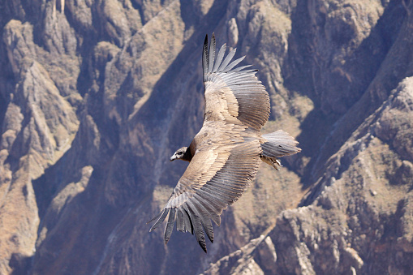

Eagles in the sky!
Bald Eagle
A bald eagle's white head may make it look bald. But actually the name comes from an old English word, "balde," meaning white.
These graceful birds have been the national symbol of the United States since 1782.
Bald eagles were on the brink of extinction because of hunting and pollution. But laws created almost 40 years ago have helped protect them, and they've made a comeback.
Female bald eagles are a bit bigger than males. Their bodies can be three feet (one meter) long, and their wingspan can be eight feet (2.4 meters) across.
That's about the distance from the floor to the ceiling... Citeste mai mult despre vulturi!
